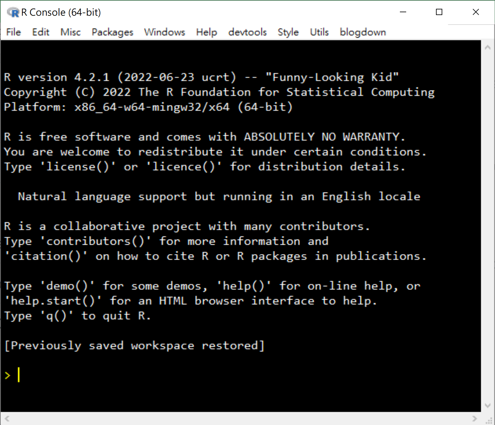
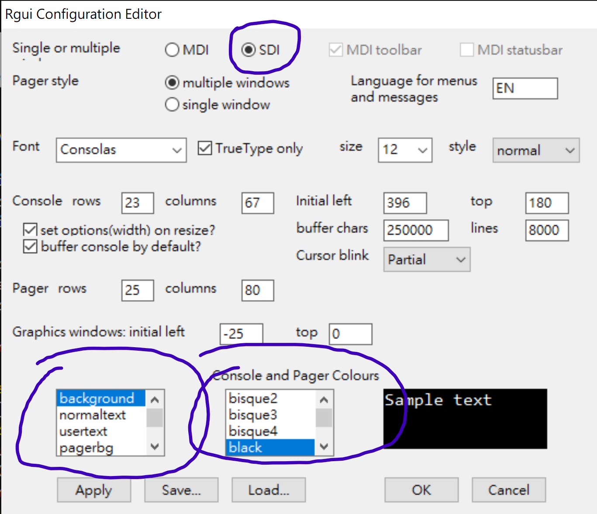
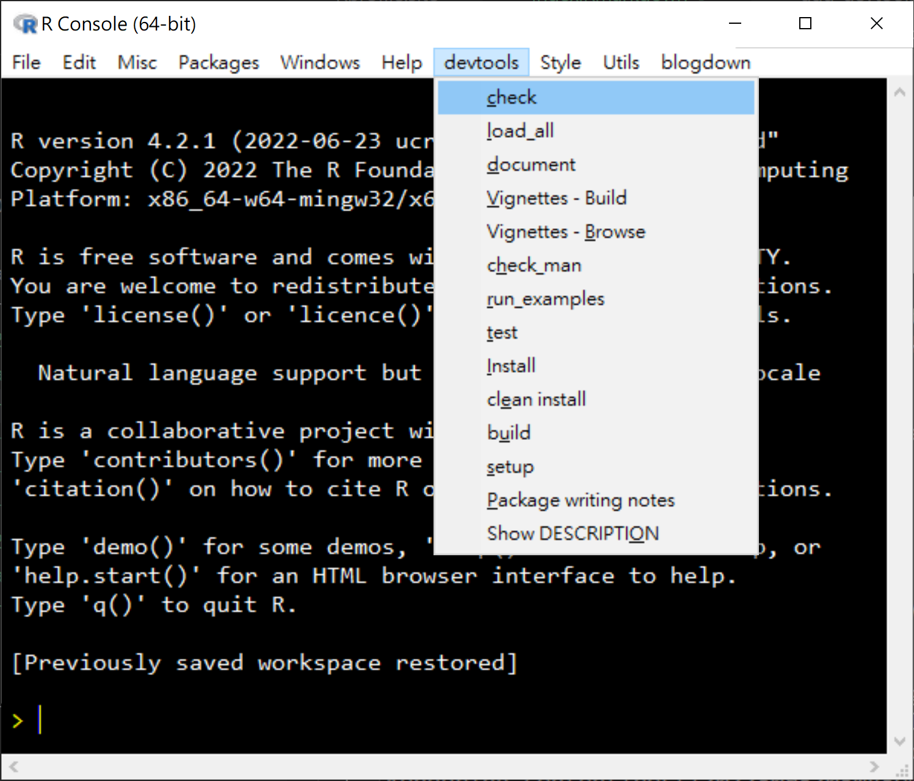
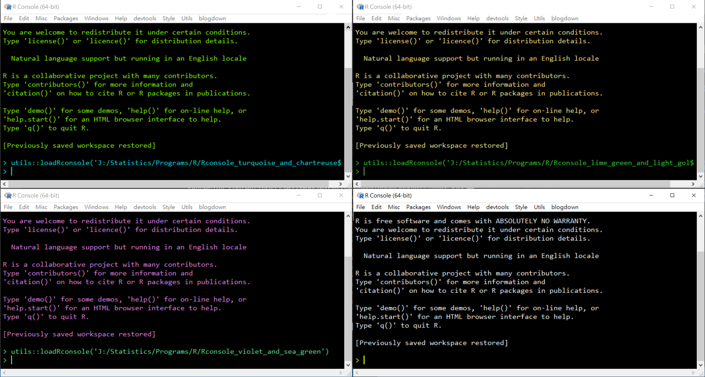

Customize R GUI For Windows
Many people use RStudio, and some even mistaken RStudio as R. I mainly work on Windows machines and I did try RStudio for a while a few years ago. However, I switched back to default R GUI for Windows that comes with R for Windows and used it along with light-weight code editors, for personal reasons. RStudio is good, but has many features that I don’t need. Although I now use VS Code as my main IDE for R, I still use R GUI for Windows a lot. It is light-weight, came with base installation, and is customizable. Simple but good enough for some tasks.

The console above is not the default one. I like dark theme and single-document interface (SDI). I keep only a limited numbers of windows on my desktop and I never group windows in the taskbar. SDI is much more efficient for me to locate the window I need.
The configuration can be set in Edit->Preferences:

The configuration is saved in the
Rconsole file in the folder etc
in R’s installation folder. Whenever
I upgrade to a new version of R, I simply
copy this file to the same folder in the
new installation of R to have my
preferred configuration. No need to set
the configuration again. (I’ve just
found that I haven’t changes this
configuration for over five years!)
Another feature I like is customizing
the menu bar. I use devtools a lot,
and would love to call them from the
pulldown menu … well, not really.
I rarely use the mouse to access the
pulldown menu. I use the keyboard
most of the time.

To add a menu, we can use a script and two functions.
The following function add a menu called devtools:
utils::winMenuAdd("devtools")
After a menu is added, items can be added by
utils::winMenuAddItem(). For example, the following
call add check to the menu devtools. If selected,
the call devtools::check() will be executed:
utils::winMenuAddItem("devtools",
"check",
"devtools::check()")
As the screenshot above showed, most of
the items I added to devtools are those
functions (menu items) in RStudio
(as far as I recalled … as I haven’t used
RStudio to develop package for a long
time).
Most common tasks that can be done through R code can be converted to a menu item. For example, I don’t like using the pulldown menu to change working directory. I can quickly copy the path to a folder using keyboard only (alt-D and then control-C in Explorer). Therefore, I have the following menu item added to the R GUI:
utils::winMenuAddItem("Utils",
"setwd from clipboard",
"setwd(readClipboard());getwd()")
setwd(readClipboard()) changes the working
directory to the folder I copied to
clipboard. getwd() is added just to
confirm the change.
I sometimes open several instances of R GUI. To differentiate them, I use different color schemes:

This can be done inside R GUI too:
utils::winMenuAddItem("Style",
"Lime Green and Light Golden",
"utils::loadRconsole('D:/My_Settings/Rconsole_lime_green_and_light_golden')")
utils::loadRconsole() is used to load
the R GUI configuration stored in a
file. This file can be created by
saving the
settings in the R GUI configuration
dialog above to a file. In the above
example, the settings are stored in
the file Rconsole_lime_green_and_light_golden.
I have four such files, storing distinct
color schemes.
Like Rconsole for the color scheme
and SDI, I would like to have custom
menus when I start R GUI. This can be done
by adding code like the following to
the Rprofile.site file in the etc
folder:
if ((Sys.getenv("RS_LOCAL_PEER") == "") && (.Platform$GUI == "Rgui")) {
tryCatch(source("D:/My_Settings/add_style_menu.R"), error = function(e) e)
}
I wrote this a long long time ago and I
cannot recall their purposes. I believe
Sys.getenv("RS_LOCAL_PEER") == "" is
used to check whether a session is
launched in RStudio. .Platform$GUI == "Rgui"
is used to check whether an R session
is launched by the default R GUI. I still
occasionally use RStudio and the menus
I created should not be added if an R
session is launched inside RStudio.
I used tryCatch() just in case there
are issues that I overlooked.
So, whenever I install a new copy or version
of R, I just copy and paste the customized
Rconsole and Rprofile.site files
to etc. I can then happily have my
preferred environment. Having the
code for menu groups stored in other
files allow me to update them without
editing Rprofile.site.
Hope you find these tips useful … if you are R GUI users like me. :)